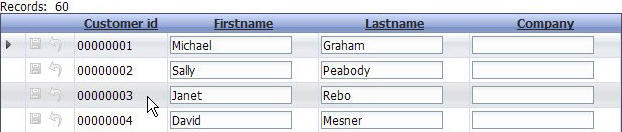

Highlight Row on Hover
Property name: 'Highlight row on hover' ('Properties' pane)
It is sometimes difficult to immediately find the position of the cursor on a grid. Selecting this property will cause the style of a row to change when the mouse hovers over the row. This helps identify the current row that will be selected with a mouse click or double-click.
|  |
|
The row where the cursor is positioned is highlighted |